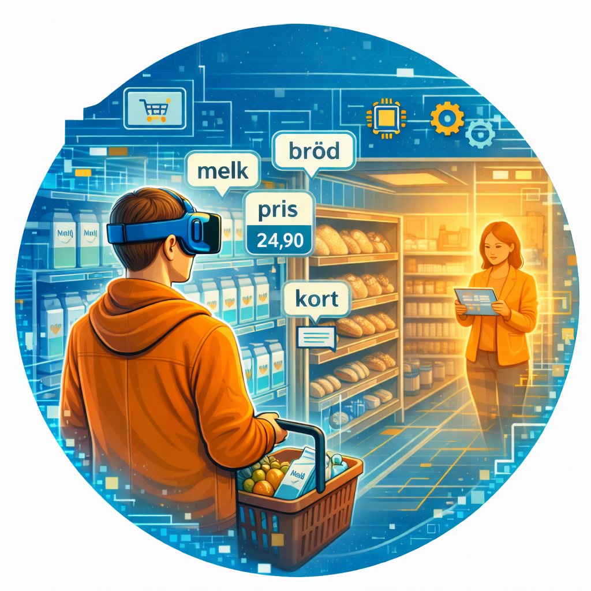

Elevens læreprosess — hva KI gjør med selve læringssituasjonen

Visualisering
Fra innhold til innsikt
KI kan brukes som et kreativt verktøy for å visualisere fagstoff, ideer og sammenhenger — gjennom konseptkart, tidslinjer, modeller eller ordskyer.
Men prosessen med å skape en visuell modell kan i seg selv være en god læreprosess — forutsatt at eleven gjør tankearbeidet selv.
Muligheten
- Hjelper eleven å organisere og konkretisere komplekse ideer
- Gjør abstrakt fagstoff synlig og håndgripelig
- Støtter kategorial dannelse — fagstoff blir til egne kategorier
Utfordringen
- Faren er at eleven produserer et «pent» diagram uten å ha gjort tankearbeidet bak
- Fokuset blir på estetikk fremfor forståelse
- KI kan ikke visualisere det eleven ikke enda har forstått — da gjør KI alt
Implikasjoner for skolen
Steg 1: La elever tegne/skisse sin forståelse først.Steg 2: Bruk KI til å generere et alternativt forslag.
Steg 3: Sammenlign og vurder — hvilken versjon forklarer best? Hva mangler?
Dette fremmer eierskap og kritisk sans. (Paolucci et al., 2024)

Simulering
Å prøve ut i trygge omgivelser — Dewey
KI-drevne simuleringer er realistiske modeller eller miljøer der eleven kan eksperimentere og prøve ut det de har lært i praksis — og utforske konsekvenser i en kontrollert setting.
Simuleringer kan tilpasse seg elevens nivå og øke i kompleksitet etter hvert som eleven mestrer det.
Muligheten
- Trygt å feile og prøve igjen uten konsekvenser
- Tilpasser seg elevens nivå — åpner verden for den som trenger det
- Kontinuerlig og motiverende læring gjennom mestring
Utfordringen — Dewey ville spurt:
- Er erfaringen autentisk? Simulering er forenklet, ikke «ekte» virkelighet
- Er den sosial? Eksperimenterer eleven alene eller sammen?
- Følges den av refleksjon? «Vi lærer ikke av erfaring, men av å reflektere over erfaring»
Implikasjoner for skolen
Simuleringer har størst læringsverdi når de er kontinuerlige (bygger på tidligere erfaring), sosiale (gjøres sammen og diskuteres) og etterfulgt av refleksjon.Læreren er avgjørende for at simuleringen kobles til ekte forståelse — ikke bare mestringsfølelse.